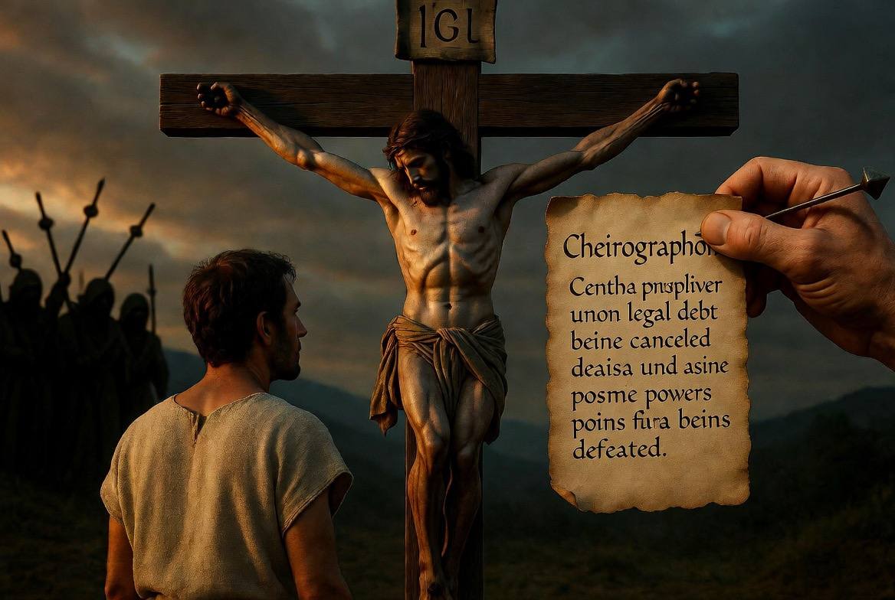
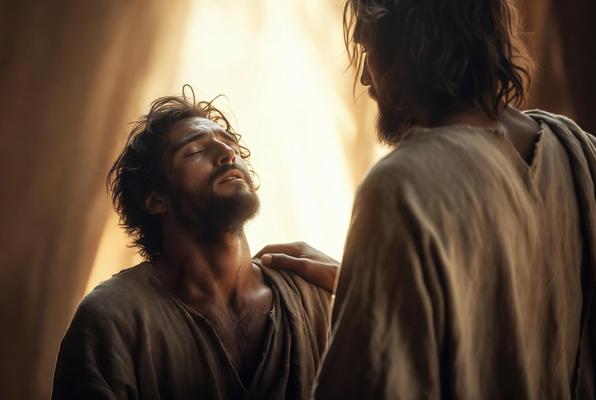
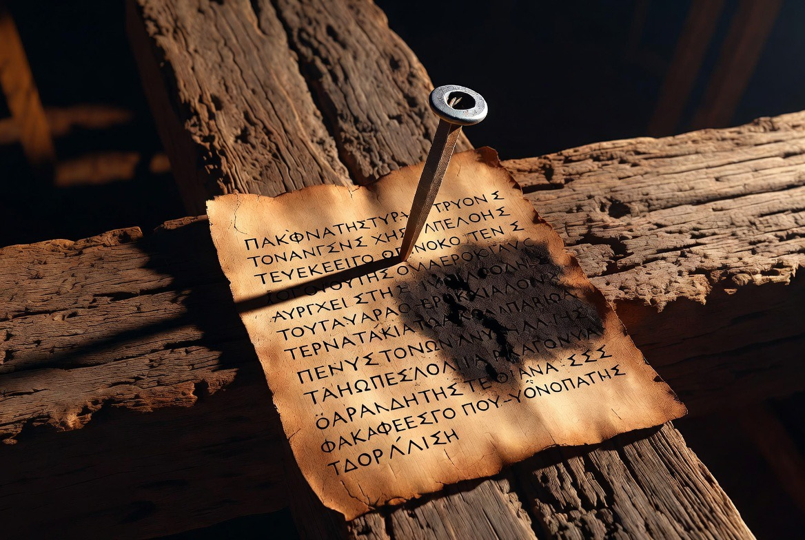
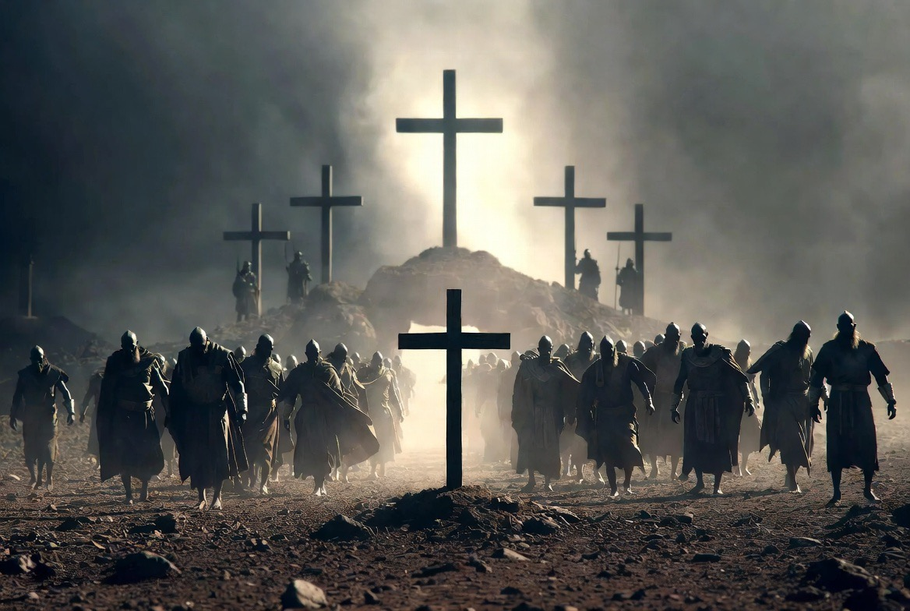
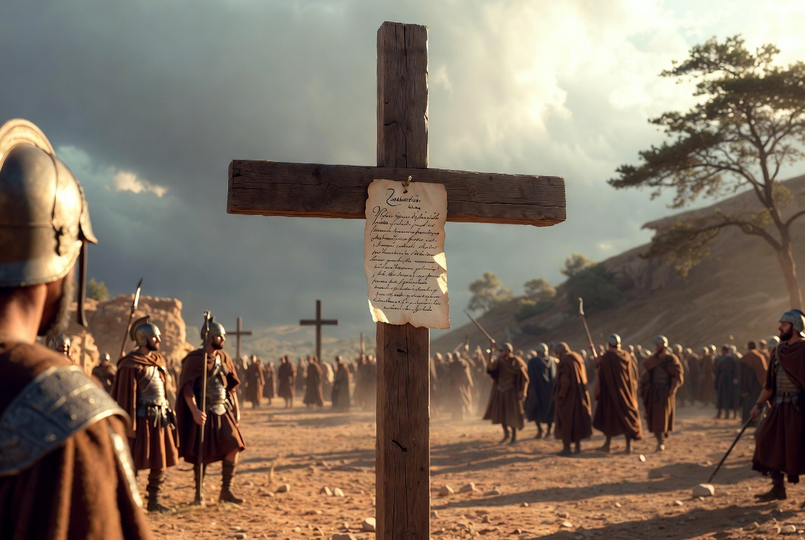

A close reading of the single sprawling sentence that turns the cross into three arenas of reality.

The cross as the single event that addresses the personal, legal, and cosmic arenas at once.
Colossians 2:13-15 is a single, sprawling Greek sentence, and nearly every clause in it hangs off just three main verbs. Getting those three verbs in view is the whole game, because each one opens onto a different arena: your own life, a legal record, and the cosmic powers. The author is making one claim in three registers, and the claim is about what God did at the cross. (I'll say "Paul" for short, without prejudging the authorship debate, which doesn't affect the reading.)
13 And you, being dead in your trespasses and in the uncircumcision of your flesh: you he made alive together with him. Having freely forgiven us all our trespasses,
14 having wiped out the handwritten certificate of debt that stood against us with its decrees, the one hostile to us: this he has lifted out of the way, having nailed it to the cross.
15 Having stripped off the rulers and the authorities, he made a public spectacle of them, leading them in triumphal procession by it.
I have kept three features visible that English versions usually smooth flat: the three main verbs ("he made alive," "he has lifted away," "he made a public spectacle"), the way every other clause is a participle leaning on them, and the pronoun switch from "you" to "us" in verse 13.
The backbone is three indicative verbs, and they are doing distinct work:
Everything else (forgiving, wiping out, nailing, stripping, leading in procession) is a participle clustered around these three. So the author is not narrating a sequence of separate events; he is describing one event, the cross, and turning it to catch the light from three angles.
One grammatical detail worth flagging because it is anchored and easy to miss: verb two is in the perfect tense ("he has lifted it out of the way"), while the participles around it are aorist (point-action). The perfect signals an abiding state: the document was removed and it stays removed. Amid a string of "he did, he did," there is one "and now it is gone for good." That is deliberate.

“You he made alive together with him.” The double “with” that joins the believer to Christ’s own life.
8 See that no one takes you captive through philosophy and empty deceit, according to human tradition, according to the elemental powers of the world (stoicheia tou kosmou), and not according to Christ.
This is the danger the whole chapter answers. The Colossians are being pressured toward a "philosophy" that braids together Jewish-style observance (circumcision in v.11; food, drink, festivals, new moons, and sabbaths in v.16), ascetic rules ("do not handle, do not taste, do not touch," v.21), and reverence toward spiritual beings ("worship of angels," v.18). Sitting behind all of it are the stoicheia and the rulers and authorities (archai kai exousiai).
A modern reader hears "rulers and authorities" as a vague abstraction. The original audience did not. In this letter those words name real cosmic beings. Earlier Paul has already listed them:
1:16 ...for in him were created all things in the heavens and on the earth, the visible and the invisible, whether thrones or dominions or rulers or authorities (archai or exousiai); all things have been created through him and for him.
So the archai kai exousiai of 2:15 are the same class of beings named in 1:16: created spiritual powers, part of the unseen administration of the cosmos. In the wider scriptural imagination these are the kind of heavenly beings to whom the nations were apportioned and who became objects of fear and worship. The Colossian "philosophy" is essentially a strategy for managing these powers, keeping their calendar, observing their taboos, paying court to the angels. Paul's counter is brutally simple: Christ is the head of every ruler and authority (2:10), and at the cross those same powers were defeated. You do not placate a conquered enemy. That is the argument these three verses serve.
13 And you, being dead in your trespasses and in the uncircumcision of your flesh: you he made alive together with him. Having freely forgiven us all our trespasses,
"Uncircumcision of your flesh" marks the Colossians as Gentiles: outside the covenant, in the realm of "flesh," dead. The verb that rescues them is loaded with togetherness. συνεζωοποίησεν already carries a "with" prefix (syn-, "made-alive-together"), and then Paul adds syn autō, "with him," on top of it: a double "with." This is not decoration. It is the engine of the whole passage and the whole letter. Look at the cluster:
Whatever is true of Christ becomes true of those joined to him. Hold that thought, because it is what makes verse 15 personal rather than abstract.
Then the pronouns shift. The Colossians are "you... your... you," but forgiveness is granted to "us": having freely forgiven us all our trespasses. "Forgiven" here is charisamenos, built on charis (grace): "having graced us." The move from "you" to "us" quietly folds Jew and Gentile into one debt and one pardon, which sets up the next verse, where the cancelled record is one "the decrees" most naturally tied to the Jewish law. By verse 14 there is no longer a "you Gentiles" and a "we Jews"; there is an "us" whose record is gone.

Having wiped out the handwritten certificate of debt... having nailed it to the cross.
...having wiped out the handwritten certificate of debt that stood against us with its decrees, the one hostile to us: this he has lifted out of the way, having nailed it to the cross.
The key word, cheirographon, appears nowhere else in the New Testament. It literally means "handwriting," and in ordinary legal use it was a certificate of indebtedness, an IOU written in one's own hand acknowledging what one owed. So the image is an outstanding bond, a record of debt, that stands "against us" and is "hostile to us" (the two phrases kath' hēmōn and hypenantion hēmin hammer the same point twice).
Two things shape what this debt-record is:
The decrees (tois dogmasin). A companion text uses almost the same word for the Mosaic law: in Ephesians 2:15 the law is "the commandments in decrees" (en dogmasin). So "the bond, with its decrees" most likely means the record of our indebtedness as measured against the law's regulations. The point is not that the law is evil but that the record of our failure to keep it stood over us as an unpaid account. Connecting this back to verse 13: the "trespasses" we were dead in are precisely the entries on that ledger.
The cosmic-courtroom background (here I am on softer but, I think, well-grounded ground). Second Temple Jewish texts know the idea of heavenly records of human deeds and of accusers who hold those records against people. The oldest scriptural form of it is the figure of "the satan," the accuser, who stands up in the heavenly court to press charges (Job 1-2; Zechariah 3). Read against that backdrop, the cheirographon is the indictment that the hostile powers use as their legal leverage over humanity. That is why erasing the document (v.14) flows straight into disarming the powers (v.15): you take away the accuser's evidence and the accuser has nothing left to say. I would label the specific "accusers holding a debt-record" reconstruction as probable but contested; the plain legal sense ("our debt of trespasses, cancelled") is secure on its own.
The verb for "wiped out," exaleiphō, is the right verb for erasing writing, scrubbing ink off a page. It is also the verb Scripture uses for God blotting out sins: "I, I am the one who blots out (exaleiphōn) your transgressions" (Isaiah 43:25), "blot out (exaleipson) my iniquity" (Psalm 51). That is a real verbal echo, not just a mood: when Paul says God "wiped out" the record, he is using the established idiom for divine pardon. I would call this a moderately anchored echo: shared vocabulary at the level of a known idiom, rather than a quotation Paul expects you to chase.
Then the irony begins. The cancelled bond is not just filed away; it is nailed to the cross. The instrument of public, shameful execution becomes the place where the charge against us is publicly posted as paid and finished.

Having stripped off the rulers and the authorities, he made a public spectacle of them, leading them in triumphal procession by it.
Having stripped off the rulers and the authorities, he made a public spectacle of them, leading them in triumphal procession by it.
Three images, all public, all humiliating to the powers.
"Stripped off" (apekdysamenos) is the famous crux, and I'll be honest about the soft ground. The verb is in the middle voice, which most naturally means "stripped off from himself." Paul uses the same rare word-group only here and twice more, both about clothing: "the stripping off (apekdysei) of the body of flesh" (2:11) and "having stripped off (apekdysamenoi) the old self" (3:9). So the author is clearly working a garment motif, and that is a solid internal anchor. The live readings are: (a) God/Christ stripped the powers off himself, like flinging away clothing that clung to him in death; or (b) the verb has effectively come to mean "disarm/strip" an enemy, as a victor strips a defeated foe of armor. I commit to the result with high confidence (the powers are divested, rendered powerless) while flagging that the precise mechanics of the middle voice are genuinely debated. The NIV's "disarming" captures the outcome; "stripped off" keeps the clothing picture the author is plainly using.
"Made a public spectacle" (edeigmatisen) ... "in public" (en parrēsia) ... "led in triumphal procession" (thriambeusas). This last verb is the Roman triumph: the victorious general's parade through the city, dragging the conquered kings behind his chariot as public exhibits before their execution. So God is pictured leading the defeated powers as captives in a victory parade, exposing them openly.
Here is the reversal that is the theological heart of the passage, and the thing the Colossians most needed to hear. The cross looked like the powers' triumph over Jesus: a Roman execution, the authorities parading a condemned man in shame. Paul says that is exactly backwards. At the cross the powers were doing their worst and were thereby unmasked and beaten; the real procession running through Golgotha is God leading them as the captives. The same logic surfaces elsewhere in Paul: the rulers of this age crucified the Lord of glory precisely because they did not understand what they were doing (1 Corinthians 2:8). The mocked, stripped, paraded victim is in fact the victor, and the powers are the ones stripped and paraded.
A small grammatical note on "by it." The phrase is en autō, "in/by him" or "in/by it." The nearest noun is "the cross" (v.14), so "by it [the cross]" reads cleanly and makes the cross the bracket around the climax: the document nailed to the cross, the powers triumphed over by the cross. Many translations render "in him [Christ]" instead. The theology is identical either way: the victory happens at and through the cross. I lean slightly to "the cross" on proximity but hold it loosely.

The cross looked like the powers’ triumph over Jesus. Paul says that is exactly backwards.
The three verses are one motion, and the logic is a courtroom:
13 ...he made you alive... having forgiven us all our trespasses,
14 having wiped out the certificate of debt against us... nailing it to the cross,
15 having stripped the rulers and authorities, he made a public spectacle of them...
Forgiveness (v.13) works by cancelling the debt-record (v.14), and cancelling the record is what disarms the accusing powers (v.15). Take away the charge and the accuser is left holding nothing. There is a strong conceptual resonance here with Zechariah 3, the clearest courtroom scene in Scripture: the high priest stands accused, his guilt pictured as filthy garments, the garments are stripped off and replaced, the iniquity is declared removed, and the accuser is silenced. The pieces all rhyme with Colossians 2: an accuser, a charge, guilt removed, a stripping-and-clothing image, the enemy silenced. But I want to be precise: the vocabulary does not overlap (Zechariah's Greek uses different verbs for "remove"), so this is a thematic resonance, not a citation the author expects you to catch. It illuminates the scene; it does not anchor the reading.
Read against the "philosophy," the payoff is pastoral and pointed. The powers behind the calendar, the food rules, and the angel-veneration are not authorities to be appeased; they are defeated captives in someone else's victory parade. And you are not spectators of that victory, you are joined to the victor: you died, were buried, and were raised with him (2:12-13), so his triumph over the powers is yours. That is exactly why the next paragraph can say, "Therefore let no one judge you in matters of food and drink or festival or new moon or sabbath" (2:16) and "Why do you submit to regulations?" (2:20-21). The cross has settled the question of who runs the cosmos, and submitting again to the powers' rulebook would be re-enlisting under a conquered enemy. Three chapters later this lands on the believer's own wardrobe: you have "stripped off the old self" and "put on the new" (3:9-10), the same stripping-and-clothing the cross enacted on the powers.
His triumph over the powers is yours. You are joined to the one who defeated them.
Anchored (verifiable in the Greek and structure): the three finite verbs and their three arenas; the perfect tense marking permanent removal of the document; the syn- / syn autō participation theme running through 2:12-3:4; the rulers/authorities of 2:15 being the created powers of 1:16; the clothing/stripping word-group unique to Colossians (2:11; 2:15; 3:9); cheirographon as a legal debt-bond; exaleiphō as the idiom for blotting out sins; thriambeuō as the Roman triumph.
Probable but contested: the dogmata as the law's decrees (leaning on the Ephesians 2:15 parallel); the debt-record as the accusing powers' legal leverage; "by it" referring to the cross rather than "in him."
Soft / resonance only: the exact force of the middle voice in "stripped off" (the outcome is secure, the mechanics are not); the Zechariah 3 link, which is conceptually strong but not verbally anchored.
This reading sits close to how the context-first scholars you trust handle the passage, so I am not flagging a divergence; the main place I have deliberately stayed cautious rather than following the boldest version of their case is the precise referent of the cheirographon, where I have committed to the secure core (cancelled debt of trespasses) and labelled the cosmic-accuser layer as probable rather than certain.